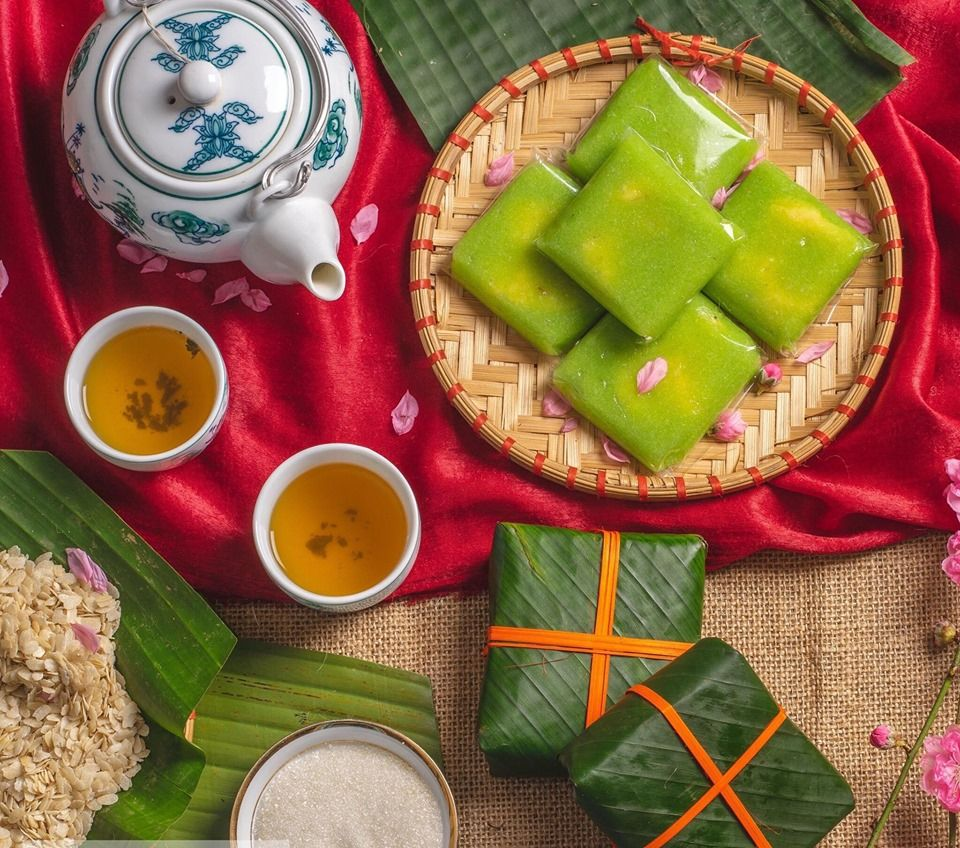
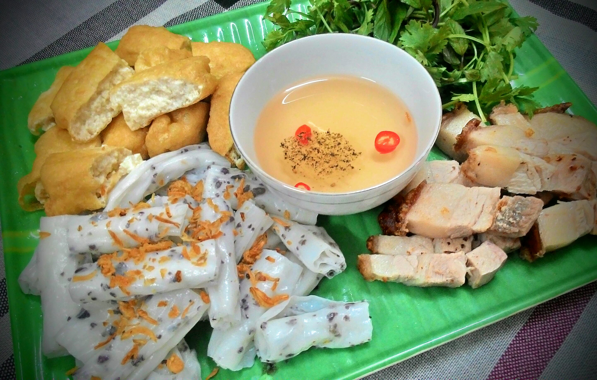
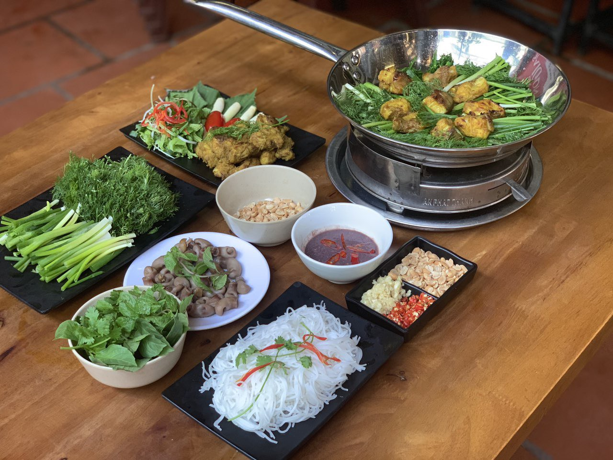
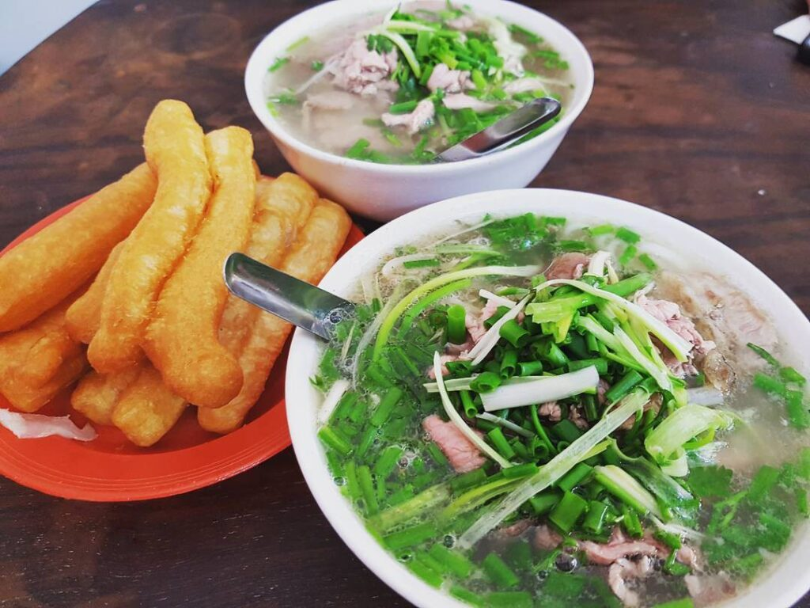

Hà Nội là trung tâm văn hóa của cả miền Bắc từ nhiều thế kỷ, tại Hà Nội có thể tìm thấy và thưởng thức những món ăn của nhiều vùng đất khác, nhưng ẩm thực Hà Nội cũng có những nét riêng biệt.
Cốm làng Vòng được những người dân của ngôi làng cùng tên thuộc quận Cầu Giấy làm đặc trưng bởi mùi thơm và màu sắc. Cốm làm từ giống nếp vàng gặt khi còn non, gói trong những tàu lá sen màu ngọc thạch và được những người bán hàng rao bán ngay từ sáng sớm.

Tuy phổ biến nhất là cốm tươi, nhưng món ăn này còn được chế biến thành món chả cốm. Đây cũng là một món quà được dùng trong các dịp vui.
Thanh Trì, làng vùng ngoại ô khác thuộc phường Thanh Trì, quận Hoàng Mai, với món bánh cuốn Thanh Trì. Bánh được làm từ gạo gié cánh, tám thơm, tráng mỏng như tờ giấy.

Những phụ nữ vùng Thanh Trì cho bánh vào thúng, đội trên đầu và đi rao khắp các ngõ phố của Hà Nội. Bánh xếp trong thúng, từng lớp gối nhau trên những tàu lá chuối. Khi ăn, bánh được bóc từng lớp rồi cuộn lại, bày trên những chiếc đĩa. Món bánh cuốn Thanh Trì được ăn cùng với loại nước mắm pha theo công thức đặc biệt của người Thanh Trì xưa kia được thêm tinh dầu từ con Cà cuống với mùi thơm đặc trưng, đậu phụ rán nóng, chả quế. Ngày nay, bánh còn được ăn với thịt ba chỉ quay giòn.
Một món ăn khác có tiếng của Hà Nội là chả cá Lã Vọng. Vào thời Pháp thuộc, gia đình họ Đoàn phố Hàng Sơn, ngày nay là 14 phố Chả Cá, đã tạo nên một món ăn mà danh tiếng của nó làm thay đổi cả tên con phố.

Chả được làm từ thịt cá lăng – hoặc cá quả, cá nheo nhưng sẽ kém ngon hơn – thái mỏng ướp với nước riềng, nghệ, mẻ, hạt tiêu, nước mắm rồi kẹp vào cặp tre nướng trên lò than ngay trên bàn ăn của thực khách. Chả cá Lã Vọng phải ăn nóng, kèm với bánh đa nướng hay bún rối, lạc rang, rau mùi, húng láng, thì là, hành củ tươi chẻ nhỏ, chấm với mắm tôm.
Phở là món ăn rất phổ biến ở Việt Nam, nhưng phở Hà Nội có những cách chế biến đặc trưng riêng.

Phở Hà Nội mang vị ngọt của xương bò, thịt vừa chín đến độ để vẫn dẻo mà không dai, màu nước phở trong, bánh phở mỏng và mềm. Sau khi được trần qua nước nóng, bánh phở được dàn đều trong bát, bên trên là những lát thịt mỏng cùng hành hoa, rau thơm. Cùng với thời gian, nhiều món phở mới xuất hiện với những cách chế biến khác nhau, như phở xào, phở rán, phở cuốn.
Làng Lệ Mật nổi tiếng với những món ăn chế biến từ rắn. Rượu ngâm xương rắn được phục vụ miễn phí.
Ở Hà Nội còn có nhiều món ăn đặc trưng khác như phở cuốn, bún thang, bún chả, bún nem, bún bung, bún mọc, đậu phụ Mơ, bánh tôm Hồ Tây, bún ốc, xôi Phú Thượng, bánh tẻ Phú Nhi, tào phớ An Phú, nem chua Đông Ngạc, nem Phùng, giò chả Ước Lễ.
Nguồn: https://vi.wikipedia.org/wiki/H%C3%A0_N%E1%BB%99i#%E1%BA%A8m_th%E1%BB%B1c